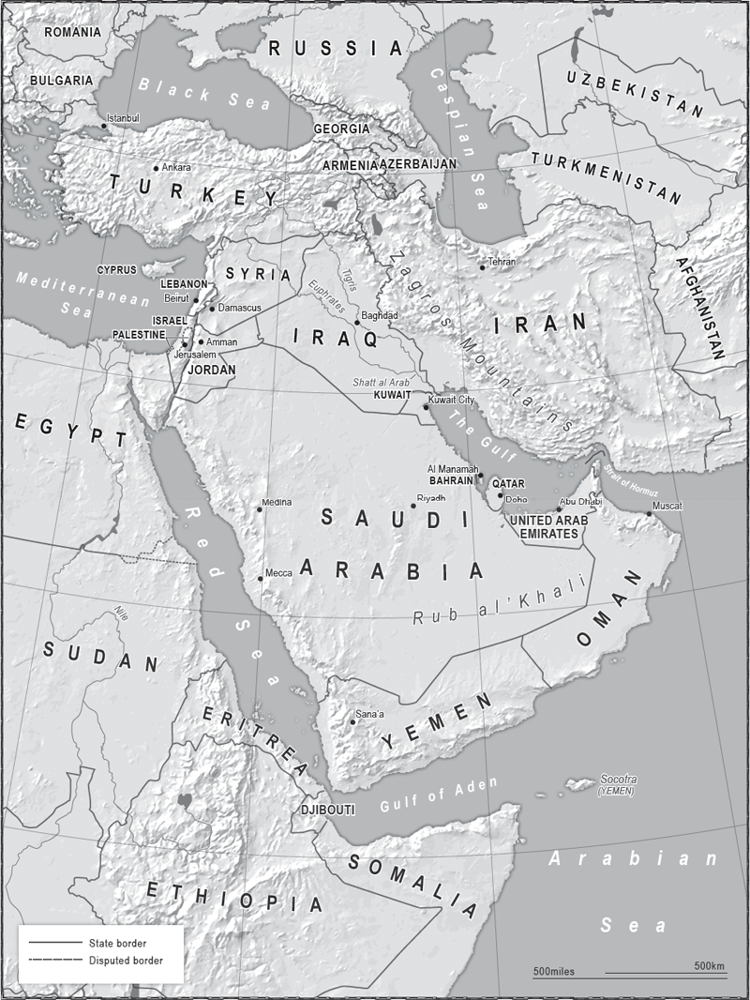
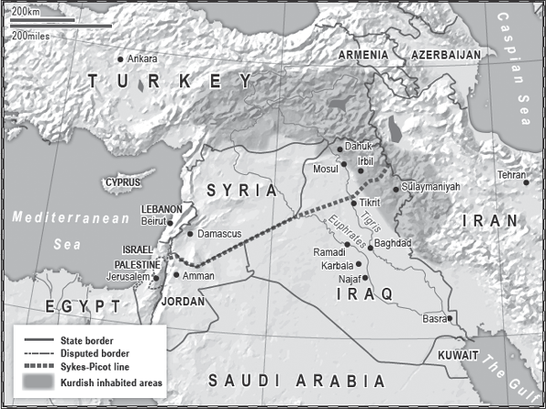
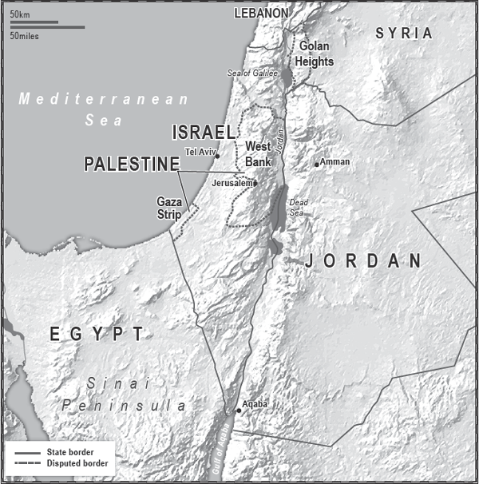

‘We’ve broken Sykes-Picot!’
Islamic State fighter, 2014

THE MIDDLE OF WHAT? EAST OF WHERE? THE REGION’S VERY name is based on a European view of the world, and it is a European view of the region that shaped it. The Europeans used ink to draw lines on maps: they were lines that did not exist in reality and created some of the most artificial borders the world has seen. An attempt is now being made to redraw them in blood.
One of the most important pieces of video to emerge from the Middle East in 2014 was overshadowed that year by footage of explosions and beheadings. It is a piece of slick propaganda by Islamic State and shows a bulldozer wiping, or rather pushing, the Iraqi–Syrian border out of existence. The border is simply a high berm of sand. Move the sand and the border no longer physically exists. This ‘line’ still exists in theory. The next few years will determine whether the words of the Islamic State fighter quoted above are prophetic, or mere bravado: ‘We are destroying the borders and breaking the barriers. Thanks be to Allah.’
After the First World War, there were fewer borders in the wider Middle East than currently exist, and those that did exist were usually determined by geography alone. The spaces within them were loosely subdivided and governed according to geography, ethnicity and religion, but there was no attempt to create nation states.
The Greater Middle East extends across 1,000 miles, west to east, from the Mediterranean Sea to the mountains of Iran. From north to south, if we start at the Black Sea and end on the shores of the Arabian Sea off Oman, it is 2,000 miles long. The region includes vast deserts, oases, snow-covered mountains, long rivers, great cities and coastal plains. And it has a great deal of natural wealth in the form that every industrialised and industrialising country around the world needs – oil and gas.
It also contains the fertile region known as Mesopotamia, the ‘land between the rivers’ (the Euphrates and Tigris). However, the most dominant feature is the vast Arabian Desert and scrubland in its centre which touches parts of Israel, Jordan, Syria, Iraq, Kuwait, Oman, Yemen and most of Saudi Arabia including the Rub’ al Khali or ‘Empty Quarter’. This is the largest continuous sand desert in the world, incorporating an area the size of France. It is due to this feature not only that the majority of the inhabitants of the region live on its periphery, but also that until European colonisation most of the people within it did not think in terms of nation states and legally fixed borders.
The notion that a man from a certain area could not travel across a region to see a relative from the same tribe unless he had a document, granted to him by a third man he didn’t know in a faraway town, made little sense. The idea that the document was issued because a foreigner had said the area was now two regions and had made up names for them made no sense at all and was contrary to the way in which life had been lived for centuries.
The Ottoman Empire (1299–1922) was ruled from Istanbul. At its height it stretched from the gates of Vienna, across Anatolia and down through Arabia to the Indian Ocean. From west to east it took in what are now Algeria, Libya, Egypt, Israel/Palestine, Syria, Jordan, Iraq and parts of Iran. It had never bothered to make up names for most of these regions; in 1867 it simply divided them into administrative areas known as ‘Vilayets’, which were usually based on where certain tribes lived, be they the Kurds in present-day Northern Iraq, or the tribal federations in what is now part of Syria and part of Iraq.
When the Ottoman Empire began to collapse, the British and French had a different idea. In 1916 the British diplomat Colonel Sir Mark Sykes took a chinagraph pencil and drew a crude line across a map of the Middle East. It ran from Haifa on the Mediterranean in what is now Israel to Kirkuk (now in Iraq) in the north-east. It became the basis of his secret agreement with his French counterpart François Georges-Picot to divide the region into two spheres of influence should the Triple Entente defeat the Ottoman Empire in the First World War. North of the line was to be under French control, south of it under British hegemony.
The term ‘Sykes-Picot’ has become shorthand for the various decisions made in the first third of the twentieth century which betrayed promises given to tribal leaders and which partially explain the unrest and extremism of today. This explanation can be overstated, though: there was violence and extremism before the Europeans arrived. Nevertheless, as we saw in Africa, arbitrarily creating ‘nation states’ out of people unused to living together in one region is not a recipe for justice, equality and stability.
Prior to Sykes-Picot (in its wider sense), there was no state of Syria, no Lebanon, nor were there Jordan, Iraq, Saudi Arabia, Kuwait, Israel or Palestine. Modern maps show the borders and the names of nation states, but they are young and they are fragile.
Islam is the dominant religion of the Middle East, but contains within it many different versions. The most important division within Islam is almost as old as the religion itself: the split between Sunni and Shia Muslims dates back to 632 CE when the prophet Muhammad died, leading to a dispute over his succession.
The Sunni Muslims form the majority among Arabs, and indeed among the world’s Muslim population, comprising perhaps 85 per cent of the total, although within some of the Arab countries the percentages are less distinct. The name comes from ‘Al Sunna’ or ‘people of tradition’. Upon the death of the Prophet, those who would become Sunni argued that his successor should be chosen using Arab tribal traditions. They regard themselves as Orthodox Muslims.
The word Shia derives from ‘Shiat Ali’, literally ‘the party of Ali’, and refers to the son-in-law of the Prophet Muhammad. Ali and his sons Hassan and Hussein were all assassinated and thus denied what the Shia feel was their birthright – to lead the Islamic community.
From this sprang several doctrinal disputes and cultural practices dividing the two main branches of Islam that have led to disputes and warfare, although there have also been long periods of peaceful coexistence.
There are also divisions within the division. For example, there are various branches of Sunni Islam that follow particular great scholars from the past, including the strict Hanbali tradition, named after the ninth-century Iraqi scholar Ahmad ibn Hanbal, favoured by many Sunnis from Qatar and Saudi Arabia; this in turn has influenced the ultra-puritanical Salafi thought, which predominates among jihadists.
Shia Islam has three main divisions, the best known of which is probably the Twelvers, who adhere to the teaching of the Twelve Imams, but even that contains divisions. The Ismaili school disputes the lineage of the seventh Imam, while the Zaidi school disputes that of the fifth Imam. There are also several offshoots from mainstream Shia Islam, with the Alawites (Alawis) and Druze being considered so far away from traditional Islamic thought that many other Muslims, especially among the Sunni, do not even recognise them as being part of the religion.
The legacy of European colonialism left the Arabs grouped into nation states and ruled by leaders who tended to favour whichever branch of Islam (and tribe) they themselves came from. These dictators then used the machinery of state to ensure their writ ruled over the entire area within the artificial lines drawn by the Europeans, regardless of whether this was historically appropriate and fair to the different tribes and religions that had been thrown together.
Iraq is a prime example of the ensuing conflicts and chaos. The more religious among the Shia never accepted that a Sunni-led government should have control over their holy cities such as Najaf and Karbala, where their martyrs Ali and Hussein are said to be buried. These communal feelings go back centuries; a few decades of being called ‘Iraqis’ was never going to dilute such emotions.
As rulers of the Ottoman Empire the Turks saw a rugged, mountainous area dominated by Kurds, then, as the mountains fell away into the flatlands leading towards Baghdad, and west to what is now Syria, they saw a place where the majority of people were Sunni Arabs. Finally, after the two great rivers the Tigris and the Euphrates merged and ran down to the Shatt al-Arab waterway, the marshlands and the city of Basra, they saw more Arabs, most of whom were Shia. They ruled this space accordingly, dividing it into three administrative regions: Mosul, Baghdad and Basra.
In antiquity, the regions very roughly corresponding to the above were known as Assyria, Babylonia and Sumer. When the Persians controlled the space they divided it in a similar way, as did Alexander the Great, and later the Umayyad Empire. The British looked at the same area and divided the three into one, a logical impossibility Christians can resolve through the Holy Trinity, but which in Iraq has resulted in an unholy mess.
Many analysts say that only a strong man could unite these three areas into one country, and Iraq had one strong man after another. But in reality the people were never unified, they were only frozen with fear. In the one place which the dictators could not see, people’s minds, few bought into the propaganda of the state, wallpapering as it did over the systematic persecution of the Kurds, the domination by Saddam’s Sunni Muslim clan from his home town of Tikrit, nor the mass slaughter of the Shia after their failed uprising in 1991.
The Kurds were the first to leave. The smallest minorities in a dictatorship will sometimes pretend to believe the propaganda that their rights are protected because they lack the strength to do anything about the reality. For example, Iraq’s Christian minority, and its handful of Jews, felt they might be safer keeping quiet in a secular dictatorship, such as Saddam’s, than risk change and what they feared might, and indeed has, followed. However, the Kurds were geographically defined and, crucially, numerous enough to be able to react when the reality of dictatorship became too much.
Iraq’s five million Kurds are concentrated in the north and northeastern provinces of Irbil, Sulaymaniyah and Dahuk and their surrounding areas. It is a giant crescent of mostly hills and mountains, which meant the Kurds retained their distinct identity despite repeated cultural and military attacks against them, such as the al-Anfal campaign of 1988, which included aerial gas attacks against villages. During the eight-stage campaign, Saddam’s forces took no prisoners and killed all males aged between fifteen and fifty that they came across. Up to 100,000 Kurds were murdered and 90 per cent of their villages wiped off the map.
When in 1990 Saddam Hussein over-reached into Kuwait, the Kurds went on to seize their chance to make history and turn Kurdistan into the reality they had been promised after the First World War in the Treaty of Sèvres (1920), but never granted. At the tail end of the Gulf War conflict the Kurds rose up, the Allied forces declared a ‘safe zone’ into which Iraqi forces were not allowed, and a de facto Kurdistan began to take shape. The 2003 invasion of Iraq by the USA cemented what appears to be a fact – Baghdad will not again rule the Kurds.
Kurdistan is not a sovereign recognised state but it has many of the trappings of one, and current events in the Middle East only add to the probability that there will be a Kurdistan in name and in international law. The questions are: what shape will it be? And how will Syria, Turkey and Iran react if their Kurdish regions attempt to be part of it and try to create a contiguous Kurdistan with access to the Mediterranean?
There will be another problem: unity among the Kurds. Iraqi Kurdistan has long been divided between two rival families. Syria’s Kurds are trying to create a statelet they call Rojava. They see it as part of a future greater Kurdistan, but in the event of its creation questions would arise as to who would have how much power, and where. If Kurdistan does become an internationally recognised state then the shape of Iraq will change. That assumes there will be an Iraq. There may not be.

Although not a recognised state, there is an identifiable ‘Kurdistan’ region. Crossing borders as it does, this is an area of potential trouble should the Kurdish regions attempt to establish an independent country.
The Hashemite Kingdom, as Jordan is also known, is another place that was carved out of the desert by the British, who in 1918 had one large piece of territory to administer and several problems to solve.
Various Arabian tribes had helped the British against the Ottomans during the First World War, but there were two in particular which London promised to reward at the war’s end. Unfortunately both were promised the same thing – control of the Arabian Peninsula. Given that the Saud and Hashemite tribes frequently fought each other, this was a little awkward. So London dusted down the maps, drew some lines and said the head of the Saud family could rule over one region, and the head of the Hashemites could rule the other, although each would ‘need’ a British diplomat to keep an eye on things. The Saudi leader eventually landed on a name for his territory, calling it after himself, hence we know the area as Saudi Arabia – the rough equivalent would be calling the UK ‘Windsorland’.
The British, sticklers for administration, named the other area ‘Transjordan’, which was shorthand for ‘the other side of the Jordan River’. A dusty little town called Amman became the capital of Transjordan, and when the British went home in 1948 the country’s name changed to Jordan. But the Hashemites were not from the Amman area: they were originally part of the powerful Qureshi tribe from the Mecca region, and the original inhabitants were mostly Bedouin. The majority of the population is now Palestinian: when the Israelis occupied the West Bank in 1967 many Palestinians fled to Jordan, which was the only Arab state to grant them citizenship. We now have a situation where the majority of Jordan’s 6.7 million citizens are Palestinian, many of whom do not regard themselves as loyal subjects of the current Hashemite ruler, King Abdullah. Added to this problem are the one million Iraqi and Syrian refugees the country has also taken in who are putting a huge strain on its extremely limited resources.
Such changes to a country’s demographics can cause serious problems, and nowhere more so than in Lebanon.
Until the twentieth century, the Arabs in the region saw the area between the Lebanese mountains and the sea as simply a province of the region of Syria. The French, into whose grasp it fell after the First World War, saw things differently.
The French had long allied themselves with the region’s Arab Christians and by way of thanks made up a country for them in a place in which they appeared in the 1920s to be the dominant population. As there was no other obvious name for this country the French named it after the nearby mountains, and thus Lebanon was born. This geographical fancy held until the late 1950s. By then the birth rate among Lebanon’s Shia and Sunni Muslims was growing faster than that of the Christians, while the Muslim population had been swollen by Palestinians fleeing the 1948 Arab–Israeli War in neighbouring Israel/Palestine. There has only been one official census in Lebanon (in 1932), because demographics is such a sensitive issue and the political system is partially based on population sizes.
There have long been bouts of fighting between the various confessional groups in the area, and what some historians call the first Lebanese civil war broke out in 1958 between the Maronite Christians and the Muslims, who by this time probably slightly outnumbered the Christians. They are now in a clear majority but there are still no official figures, and academic studies citing numbers are fiercely contested.
Some parts of the capital, Beirut, are exclusively Shia Muslim, as is most of the south of the country. This is where the Shia Hezbollah group (backed by Shia-dominated Iran) is dominant. Another Shia stronghold is the Beqaa Valley, which Hezbollah has used as a staging post for its forages into Syria to support government forces there. Other towns are overwhelmingly Sunni Muslim. For example Tripoli, in the north, is thought to be 80 per cent Sunni, but it also has a sizeable Alawite minority, and given the Sunni–Alawite tensions next door in Syria this has led to sporadic bouts of fighting.
Lebanon appears to be a unified state only from the perspective of seeing it on a map. It takes just a few minutes after arriving at Beirut Airport to discover it is far from that. The drive from the airport to the centre takes you past the exclusively Shia southern suburbs, which are partially policed by the Hezbollah militia, probably the most efficient fighting force in the country. The Lebanese army exists on paper, but in the event of another civil war such as that of 1975–90, it would fall apart, as soldiers in most units would simply go back to their home towns and join the local militias.
That is, in part, what happened to the Syrian armed forces once the civil war there really took hold towards the end of 2011.
Syria is another multi-faith, multi-confessional, multi-tribal state which fell apart at the first time of asking. Typical of the region, the country is majority Sunni Muslim – about 70 per cent – but has substantial minorities of other faiths. Until 2011 many communities lived side by side in the towns, cities and countryside, but there were still distinct areas in which a particular group dominated. As in Iraq, locals would always tell you, ‘We are one people, there are no divisions between us.’ However, as in Iraq, your name, place of birth or place of habitation usually meant your background could be easily identified, and, as in Iraq, it didn’t take much to pull the one people apart into many.
When the French ruled the region they followed the British example of divide and rule. At that time the Alawites were known as Nusayris. Many Sunnis do not count them as Muslims, and such was the hostility towards them they rebranded themselves as Alawites (as in ‘followers of Ali’) to reinforce their Islamic credentials. They were a backward hill people, at the bottom of the social strata in Syrian society. The French took them and put them into the police force and military, from where over the years they established themselves as a major power in the land.
Fundamentally, everyone was aware of the tension of having leaders from a small minority of the population ruling the majority. The Assad clan, from which President Bashar Assad comes, is Alawite, a group that comprises approximately 12 per cent of the population. The family has ruled the country since Bashar’s father, Hafez, took power in a coup d’état in 1970. In 1982 Hafez crushed a Muslim Brotherhood Sunni uprising in Hama, killing perhaps 30,000 people over several days. The Brotherhood never forgave or forgot, and when the nationwide uprising began in 2011 there were scores to be settled. In some respects the ensuing civil war was simply Hama, Part Two.
The final shape and make-up of Syria is now in question, but there is one scenario in which, if Damascus falls (although that is far from probable), the Alawites retreat to their ancient coastal and hill strongholds and form a mini-statelet such as existed in the 1920s and 1930s. It is theoretically possible, but hundreds of thousands of Sunni Muslims would remain in the region and were a new Sunni-dominated government to be formed in Damascus, one of its priorities would be to secure a route to the Syrian coast and defeat the last pockets of resistance.
In the near future Syria looks as if it is destined to be ruled as a number of fiefdoms with various warlords holding sway. At the time of writing, President Assad is simply the most powerful warlord of many. Lebanon’s most recent civil war lasted for fifteen years and at times it remains perilously close to another one. Syria may suffer a similar fate.
Syria has also become, like Lebanon, a place used by outside powers to further their own aims. Russia, Iran and Lebanese Hezbollah support the Syrian government forces. The Arab countries support the opposition, but different states support different opposition groups: the Saudis and Qataris, for example, are both vying for influence, but each backs a different proxy to achieve it.
It will require skill, courage and an element so often lacking – compromise – to hold many of these regions together as a single, governable space. Especially as Sunni jihadist fighters are trying to pull them apart in order to widen their ‘caliphate’.
Groups such as Al Qaeda and, more recently, Islamic State have garnered what support they have partially because of the humiliation caused by colonialism and then the failure of pan-Arab nationalism – and to an extent the Arab nation state. Arab leaders have failed to deliver prosperity or freedom, and the siren call of Islamism, which promises to solve all problems, has proved attractive to many in a region marked by a toxic mix of piety, unemployment and repression. The Islamists hark back to a golden age when Islam ruled an empire and was at the cutting edge of technology, art, medicine and government. They have helped bring to the surface the ancient suspicions of ‘the other’ throughout the Middle East.
Islamic State grew out of the ‘Al Qaeda in Iraq’ franchise group in the late 2000s, which nominally was directed by the remnants of the Al Qaeda leadership. By the time the Syrian Civil War was in full flow the group had split from Al Qaeda and renamed itself. At first it was known by the outside world as ISIL (‘Islamic State In the Levant’) but as the Arabic word for the Levant is Al Sham, gradually it became ISIS. In the summer of 2014 the group began calling itself Islamic State, having proclaimed such an entity in large parts of Iraq and Syria.
It quickly became the ‘go to’ jihadist group, drawing thousands of foreign Muslims to the cause, partially due to its pious romanticism and partially for its brutality. Its main attraction, though, was its success in creating a caliphate; where Al Qaeda murdered people and captured headlines, IS murdered people and captured territory.
IS also seized upon an area that is increasingly important in the internet age – psychological space. It built on the pioneering work of Al Qaeda in social media and took it to new heights of sophistication and brutality. By 2015 IS was ahead of any government in levels of public messaging using jihadists brought up on the sometimes brutalising effects of the internet and its obsession with violence and sex. They are Generation Jackass Jihadis and they are ahead of the deadly game.
Sunni Islamist fighters from across the globe, drawn like moths to the light of a billion pixels, have taken advantage of the three-way split between Kurds, Sunni and Shia in Iraq. They offer the Sunni Arabs a heady mix of the promise of restoring them to their ‘rightful’ place as the dominant force in the region, and the re-establishment of the caliphate in which their version of all true believers (Sunni Muslims) live under one ruler.
However, it is the very fanaticism of their beliefs and practices that explains why they cannot achieve their utopian fantasies.
Firstly, only some of the Sunni Iraqi tribes will support the jihadist aims, and even then only to achieve their own ends – which do not include a return to the sixth century. Once they get what they want they will then turn on the jihadists, especially the foreign ones. Secondly, the jihadists have demonstrated that there is no mercy for anyone who opposes them and that being a non-Sunni is akin to a death sentence. So, all non-Sunni Muslims and all the minorities in Iraq, Christians, Chaldeans, Yazidis and others, are against them, as are dozens of Western and Muslim countries.
The non-jihadist Iraqi Sunnis are in a difficult position. In the event of either a fragmented or a legally federalised Iraq they are stuck in the middle, surrounded by sand in an area that is known as the Sunni Triangle, with its points roughly located just east of Baghdad, west of Ramadi and north of Tikrit. Sunnis living here often have more in common with their related tribes in Syria than they do with the Kurds in the north or the Shia of the south.
There is not enough economic diversity within the triangle to sustain a Sunni entity. History bequeathed oil to ‘Iraq’, but the de facto division of the country means the oil is mostly in the Kurdish and Shia areas; and if there is no strong, unified Iraq, then the oil money flows back to where the oil is found. The Kurdish lands cannot be brought under their control, the cities south of Baghdad such as Najaf and Karbala are overwhelmingly Shia, and the ports of Basra and Umm Qasr are far away from the Sunni territory. This dilemma leaves the Sunnis fighting for an equal share in a country they once ruled, sometimes toying with the idea of separation, but knowing that their future would probably be self-rule over not very much.
In the event of a split the Shia are geographically best placed to take advantage. The region they dominate has oilfields, 35 miles of coastline, the Shatt al-Arab waterway, ports, access to the outside world and a religious, economic and military ally next door in the form of Iran.
The jihadist fantasy is global domination by Salafi Islam. In their more lucid, yet still wild, moments they plan, and fight, for a more limited aim – a caliphate throughout the Middle East. One of the jihadists’ battle cries is ‘From Mosul to Jerusalem!’, meaning that they hope to control the area from Mosul in Iraq right across to Beirut in Lebanon, Amman in Jordan and Jerusalem in Israel. However, the real size of Islamic State’s geographical caliphate is limited by its capabilities.
This is not to underestimate the problem or the scale of what may be the Arab version of Europe’s Thirty Years’ War (1618–48). It is not just a Middle Eastern problem. Many of the international jihadists who survive will return home to Europe, North America, Indonesia, the Caucasus and Bangladesh, where they are unlikely to settle for a quiet life. The intelligence services in London believe there are far more British Muslims fighting in the Middle East for jihadist groups than there are serving in the British Army. The radicalisation programme undertaken by the Islamists began several decades before the de-radicalisation initiatives now under way in European countries.
Most countries in the region face their own version of this generational struggle to a greater or lesser degree. Saudi Arabia, for example, has taken on Al Qaeda cells over the past decade but, having mostly taken them apart, it now faces renewed challenges from the next generation of jihadists. It has another problem in the south, on the border with Yemen, which itself is blighted with violence, separatist movements and a strong jihadist element.
There is also a simmering Islamist movement in Jordan, especially in the town of Zarqa, in the north-east towards the Syrian and Iraqi borders, which is home to some of the several thousand supporters of groups such as Al Qaeda and Islamic State. The authorities are fearful of a jihadist group in Iraq or Syria reaching the now fragile borders in strength and crossing into Jordan. The British-trained Jordanian Army is thought to be one of the most robust in the Middle East, but it might struggle to cope if local Islamists and foreign fighters took to the streets in guerrilla warfare. If the Palestinian Jordanians declined to defend the country it is not unrealistic to believe that it would descend into the sort of chaos we now see in Syria. This is the last thing the Hashemite rulers want – and it’s the last thing the Israelis want as well.
The battle for the future of the Arab Middle East has to an extent taken the spotlight off the Israeli-Arab struggle. The fixation with Israel/ Palestine does sometimes return, but the magnitude of what is going on elsewhere has finally enabled at least some observers to understand that the problems of the region are not down to the existence of Israel. That was a lie peddled by the Arab dictators as they sought to deflect attention from their own brutality, and it was bought by many people across the area and the dictators’ useful idiots in the West. Nevertheless the Israeli/ Palestinian joint tragedy continues, and such is the obsession with this tiny piece of land that it may again come to be considered by some to be the most pressing conflict in the world.
The Ottomans had regarded the area west of the River Jordan to the Mediterranean Coast as a part of the region of Syria. They called it Filistina. After the First World War, under the British Mandate this became Palestine.
The Jews had lived in what used to be called Israel for millennia, but the ravages of history had dispersed them across the globe. Israel remained for them the ‘promised land’ and Jerusalem in particular was sacred ground. However, by 1948 Arab Muslims and Christians had been a clear majority in the land for more than a thousand years.
In the twentieth century, with the introduction of the Mandate for Palestine, the Jewish movement to join their minority co-religionists grew and, propelled by the pogroms in Eastern Europe, more and more Jews began to settle there. The British looked favourably on the creation of a ‘Jewish homeland’ in Palestine and allowed Jews to move there and buy land from the Arabs. After the Second World War and the Holocaust, Jews tried to get to Palestine in even greater numbers. Tensions between Jews and non-Jews reached boiling point, and an exhausted Britain handed over the problem to the United Nations in 1948, which voted to partition the region into two countries. The Jews agreed, the Arabs said ‘No’. The outcome was war, which created the first wave of Palestinian refugees fleeing the area and Jewish refugees coming in from across the Middle East.
Jordan occupied the West Bank region, including East Jerusalem. Egypt occupied Gaza, considering it to be an extension of its territory. Neither was minded to give the people living there citizenship or statehood as Palestinians, nor was there any significant movement by the inhabitants calling for the creation of a Palestinian state. Syria, meanwhile, considered the whole area to be part of greater Syria and the people living there as Syrians.
To this day Egypt, Syria and Jordan are suspicious of Palestinian independence, and if Israel vanished and was replaced by Palestine, all three might make claims to parts of the territory. In this century, however, there is a fierce sense of nationhood among the Palestinians, and any Arab dictatorship seeking to take a chunk out of a Palestinian state of whatever shape or size would be met with massive opposition. The Palestinians are very aware that most of the Arab countries, to which some of them fled in the twentieth century, refuse to give them citizenship; these countries insist that the status of their children and grandchildren remains ‘refugee’, and work to ensure that they do not integrate into the country.

The Golan Heights, the West Bank and Gaza remain contested territory following the Six-Day War in 1967.
During the Six-Day War of 1967 the Israelis won control of all of Jerusalem, the West Bank and Gaza. In 2005 they left Gaza, but hundreds of thousands of settlers remain in the West Bank.
Israel regards Jerusalem as its eternal, indivisible capital. The Jewish religion says the rock upon which Abraham prepared to sacrifice Isaac is there, and that it stands directly above the Holy of Holies, King Solomon’s Temple. For the Palestinians Jerusalem has a religious resonance which runs deep throughout the Muslim world: the city is regarded as the third most holy place in Islam because the Prophet Muhammad is said to have ascended to heaven from that same rock, which is on the site of what is now the ‘Furthest Mosque’ (Al Aqsa). Militarily the city is of only moderate strategic geographical importance – it has no real industry to speak of, no river and no airport – but it is of overwhelming significance in cultural and religious terms: the ideological need for the place is of more importance than its location. Control of, and access to, Jerusalem is not an issue upon which a compromise solution can be easily achieved.
In comparison, Gaza was easier for the Israelis to give up (although it was still difficult). Whether the people living there have gained much by the Israeli departure, however, is open to debate.
Gaza is by far the worse off of the two current Palestinian ‘entities’. It is only 25 miles long and 7.5 miles wide. Crammed into this space are 1.8 million people. It is in effect a ‘city state’, albeit a horribly impoverished one. Due to the conflict with Israel its citizens are penned in on three sides by a security barrier created by Israel and Egypt, and by the sea to their west. They can only build to within a certain distance of the border with Israel because the Israelis are trying to limit the ability of rocket fire from Gaza to reach deep into Israel. The last decade has seen an asymmetric arms race gain pace, with militants in Gaza seeking rockets that can fire further, and Israel developing its anti-missile defence system.
Because of its urban density Gaza makes good fighting ground for its defenders but it is a nightmare for its civilians, who have little or no shelter from war and no link to the West Bank, although the distance between the two is only 25 miles at its narrowest point. Until a peace deal is agreed there is nowhere for the Gazans to go, and little for them to do at home.
The West Bank is almost seven times the size of Gaza but is landlocked. Much of it comprises a mountain ridge which runs north to south. From a military perspective, this gives whoever commands the high ground control of the coastal plain on the western side of the ridge, and of the Jordan Rift Valley to its east. Leaving to one side the ideology of Jewish settlers, who claim the biblical right to live in what they call Judea and Samaria, from a military perspective the Israeli view is that a non-Israeli force cannot be allowed to control these heights, as heavy weapons could be fired onto the coastal plain where 70 per cent of Israel’s population lives. The plain also includes its most important road systems, many of its successful high-tech companies, the international airport and most of its heavy industry.
This is one reason for the demand for ‘security’ by the Israeli side and its insistence that, even if there is an independent Palestinian state, that state cannot have an army with heavy weapons on the ridge, and that Israel must also maintain control of the border with Jordan. Because Israel is so small it has no real ‘strategic depth’, nowhere to fall back to if its defences are breached, and so militarily it concentrates on trying to ensure no one can get near it. Furthermore, the distance from the West Bank border to Tel Aviv is about 10 miles at its narrowest; from the West Bank ridge, any half decent military could cut Israel in two. Likewise, in the case of the West Bank Israel prevents any group from becoming powerful enough to threaten its existence.
Under current conditions Israel faces threats to its security and to the lives of its citizens by terrorist attacks and rocket fire from its immediate neighbours, but not a threat to its very existence. Egypt, to the southwest, is not a threat. There is a peace treaty that currently suits both sides, and the partially demilitarised Sinai Peninsula acts as a buffer between them. East of this, across the Red Sea at Aqaba in Jordan, the desert also protects Israel, as does its peace treaty with Amman. To the north there is a potential menace from Lebanon but it is a relatively small one, in the form of cross-border raids and/or limited shelling. However, if and when Hezbollah in Lebanon use their larger and longer-range rockets to reach deep into Israel, the response will be massive.
The more serious potential threat comes from Lebanon’s bigger neighbour Syria. Historically, Damascus wants and needs direct access to the coast. It has always regarded Lebanon as part of Syria (as indeed it was) and remains bitter about its troops having been forced to leave in 2005. If that route to the sea is blocked, the alternative is to cross the Golan Heights and descend to the hilly region around the Sea of Galilee en route to the Mediterranean. But the Heights were seized by Israel after Syria attacked it in the 1973 war, and it would take an enormous onslaught by a Syrian army to break through to the coastal plain leading to the major Israeli population centres. This cannot be discounted at some future point, but in the medium term it remains extremely unlikely, and – as long as the Syrian civil war continues – impossible.
That leaves the question of Iran – a more serious consideration as it raises the issue of nuclear weapons.
Iran is a non-Arabic, majority Farsi-speaking giant. It is bigger than France, Germany and the UK combined, but while the populations of those countries amount to 200 million people, Iran has only 78 million. With limited habitable space, most live in the mountains; the great deserts and salt plains of the interior of Iran are no place for human habitation. Just driving through them can subdue the human spirit, and living in them is a struggle few undertake.
There are two huge mountain ranges in Iran: the Zagros and the Elburz. The Zagros runs from the north, 900 miles down along Iran’s borders with Turkey and Iraq, ending almost at the Strait of Hormuz in the Gulf. In the southern half of the range there is a plain to the west where the Shatt al-Arab divides Iran and Iraq. This is also where the major Iranian oilfields are, the others being in the north and centre. Together they are thought to comprise the world’s third-largest reserves. Despite this Iran remains relatively poor due to mismanagement, corruption, mountainous topography that hinders transport connections and economic sanctions which have, in part, prevented certain sections of industry from modernising.
The Elburz range also begins in the north, but along the border with Armenia. It runs the whole length of the Caspian Sea’s south shore and on to the border with Turkmenistan before descending as it reaches Afghanistan. This is the mountain range you can see from the capital, Tehran, towering above the city to its north. It provides spectacular views, and also a better-kept secret than the Iranian nuclear project: the skiing conditions are excellent for several months each year.
Iran is defended by this geography, with mountains on three sides, swampland and water on the fourth. The Mongols were the last force to make any progress through the territory in 1219–21 and since then attackers have ground themselves into dust trying to make headway across the mountains. By the time of the Second Gulf War in 2003 even the USA, the greatest fighting force the world has seen, thought better than to take a right turn once it had entered Iraq from the south, knowing that even with its superior firepower Iran was not a country to invade. In fact, the US military had a catchphrase at the time: ‘We do deserts, not mountains.’
In 1980, when the Iran–Iraq War broke out, the Iraqis used six divisions to cross the Shatt al-Arab in an attempt to annex the Iranian province of Khuzestan. They never even made it off the swamp-ridden plains, let alone entered the foothills of the Zagros. The war dragged on for eight years, taking at least a million lives.
The mountainous terrain of Iran means that it is difficult to create an interconnected economy, and that it has many minority groups each with keenly defined characteristics. Khuzestan, for example, is ethnically majority Arab, and elsewhere there are Kurds, Azeri, Turkmen and Georgians, among others. At most 60 per cent of the country speaks Farsi, the language of the dominant Persian majority. As a result of this diversity, Iran has traditionally centralised power and used force and a fearsome intelligence network to maintain internal stability. Tehran knows that no one is about to invade Iran, but also that hostile powers can use its minorities to try and stir dissent and thus endanger its Islamic revolution.
Iran also has a nuclear industry which many countries, particularly Israel, believe is being used to prepare for the construction of nuclear weapons, increasing tensions in the region. The Israelis feel threatened by the prospect of Iranian nuclear weapons. It is not just Iran’s potential to rival their own arsenal and wipe out Israel with just one bomb: if Iran were to get the bomb, then the Arab countries would probably panic and attempt to get theirs as well. The Saudis, for example, fear that the Ayatollahs want to dominate the region, bring all the Shia Arabs under their guidance, and even have designs on controlling the holy cities of Mecca and Medina. A nuclear-armed Iran would be the regional superpower par excellence, and to counter this danger the Saudis would probably try to buy nuclear weapons from Pakistan (with whom they have close ties). Egypt and Turkey might follow suit.
This means that the threat of an Israeli air strike on Iran’s nuclear facilities is a constant presence, but there are many restraining factors. One is that in a straight line it is 1,000 miles from Israel to Iran. The Israeli air force would need to cross two sovereign borders, those of Jordan and Iraq; the latter would certainly tell Iran that the attack was coming. Another is that any other route requires refuelling capabilities which may be beyond Israel, and which (if flying the northern route) also overfly sovereign territory. A final reason is that Iran holds what might be a trump card – the ability to close the Strait of Hormuz in the Gulf through which passes each day, depending on sales, about 20 per cent of the world’s oil needs. At its narrowest point the Strait, which is regarded as the most strategic in the world, is only 21 miles across. The industrialised world fears the effect of Hormuz being closed possibly for months on end, with ensuing spiralling prices. This is one reason why so many countries pressure Israel not to act.
In the 2000s the Iranians feared encirclement by the Americans. The US navy was in the Gulf, and American troops were in Iraq and Afghanistan. With the military drawdowns in both countries Iranian fears have now faded, and Iran is left in the dominant position with a direct line to its allies in Shia-dominated Iraq. The south of Iraq is also a bridge for Iran to its Alawite allies in Damascus, and then to its Shia allies in the form of Hezbollah in Lebanon on the Mediterranean coast.
In the sixth to the fourth centuries BCE the Persian Empire stretched all the way from Egypt to India. Modern-day Iran has no such imperial designs, but it does seek to expand its influence, and the obvious direction is across the flatlands to its west – the Arab world and its Shia minorities. It has made ground in Iraq since the US invasion delivered a Shia-majority government. This has alarmed Sunni-dominated Saudi Arabia and helped fuel the Middle East’s version of the Cold War with the Saudi-Iranian relationship at its core. Saudi Arabia may be bigger than Iran, it may be many times richer than Iran due to its well-developed oil and gas industries, but its population is much smaller (28 million Saudis as opposed to 78 million Iranians) and militarily it is not confident about its ability to take on its Persian neighbour if this cold war ever turns hot and their forces confront each other directly. Each side has ambitions to be the dominant power in the region, and each regards itself as the champion of its respective version of Islam. When Iraq was under the heel of Saddam, a powerful buffer separated Saudi Arabia and Iran; with that buffer gone, the two countries now glare at each other across the Gulf.
West of Iran is a country that is both European and Asian. Turkey lies on the borders of the Arab lands but is not Arabic, and although most of its land mass is part of the wider Middle East region, it tries to distance itself from the conflicts taking place there.
The Turks have never been truly recognised as part of Europe by their neighbours to the north and north-west. If Turkey is European, then Europe’s borders are on the far side of the vast Anatolian Plain, meaning they stop at Syria, Iraq and Iran. This is a concept few people accept. If it is not part of Europe, then where is it? Its greatest city, Istanbul, was European City of Culture 2010, it competes in the Eurovision Song Contest and the UEFA European Championship, it applied for membership of what is now the European Union in the 1970s; and yet less than 5 per cent of its territory is in Europe. Most geographers regard the small area of Turkey which is west of the Bosporus as being in Europe, and the rest of the country, south and south-east of the Bosporus, as being in the Middle East (in its widest sense).
That is one reason why Turkey has never been accepted into the EU. Other factors are its record on human rights, especially when it comes to the Kurds, and its economy. Its population is 75 million and European countries fear that, given the disparity in living standards, EU membership would result in a mass influx of labour. What may also be a factor, albeit unspoken within the EU, is that Turkey is a majority Muslim country (98 per cent). The EU is neither a secular nor a Christian organisation, but there has been a difficult debate about ‘values’. For each argument for Turkey’s EU membership there is an argument against, and in the past decade the prospects for Turkey joining have diminished. This has led the country to reflect on what other choices there may be.
In the 1920s, for one man at least, there was no choice. His name was Mustafa Kemal and he was the only Turkish general to emerge from the First World War with an enhanced reputation. After the victorious powers carved up Turkey he rose to become president on a platform of resisting the terms imposed by the Allies, but at the same time modernising Turkey and making it part of Europe. Western legal codes and the Gregorian calendar were introduced and Islamic public institutions banned. The wearing of the fez was forbidden, the Latin alphabet replaced Arabic script, and he even granted the vote to women (two years ahead of Spain and fifteen years ahead of France). In 1934, when Turks embraced legally binding surnames, Kemal was given the name ‘Atatürk’ – ‘Father of the Turks’. He died in 1938 but subsequent Turkish leaders continued working to bring Turkey into the West European fold, and those that didn’t found themselves on the wrong end of coups d’état by a military determined to complete Atatürk’s legacy.
By the late 1980s, however, the continued rejection by Europe and the stubborn refusal of many ordinary Turks to become less religious resulted in a generation of politicians who began to think the unthinkable – that perhaps Turkey needed a Plan B. President Turgut Özal, a religious man, came to office in 1989 and began the change. He encouraged Turks again to see Turkey as the great land bridge between Europe, Asia and the Middle East, and a country which could again be a great power in all three regions. The current President, Recep Tayyib Erdoğan, has similar ambitions, perhaps even greater ones, but has faced similar hurdles in achieving them. These are in part geographical.
Politically, the Arab countries remain suspicious that Erdoğan wants to recreate the Ottoman Empire economically and they resist close ties. The Iranians see Turkey as their most powerful military and economic competitor in their own backyard. Relations, never warm, have cooled due to them being on opposite sides in support for factions involved in the Syrian civil war. Turkey’s strong support for the Muslim Brotherhood government in Egypt was a policy that backfired when the Egyptian military staged its second coup and took power. Relations between Cairo and Ankara are now icy.
The Turkish elite have learnt that scoring Islamist points by picking fights with Israel results in Israel co-operating with Cyprus and Greece to create a trilateral energy alliance to exploit the gas fields off their respective coasts. The Egyptian government’s dim view of Turkey is contributing to Cairo’s interest in being a major customer for this new energy source. Meanwhile Turkey, which could have benefited from Israeli energy, remains largely reliant on its old foe Russia for its energy needs whilst simultaneously working with Russia to develop new pipelines to deliver energy to EU countries.
The Americans, alarmed at the new cold war between Turkey and Israel, two of its allies, are working to bring them together again. The USA wants a better relationship between them so as to strengthen NATO’s position in the eastern Mediterranean. In NATO terms, Turkey is a key country because it controls the entrance to and exit from the Black Sea through the narrow gap of the Bosporus Strait. If it closes the Strait, which is less than a mile across at its narrowest point, the Russian Black Sea Fleet cannot break out into the Mediterranean and then the Atlantic. Even getting through the Bosporus only takes you into the Sea of Marmara; you still have to navigate through the Dardanelles Straits to get to the Aegean Sea en route to the Mediterranean.
Given its land mass Turkey is not often thought of as a sea power, but it borders three seas and its control of these waters has always made it a force to be reckoned with; it is also a trade and transportation bridge linking Europe with the Middle East, the Caucasus and on up to the Central Asian countries, with which it shares history and, in some regions, ethnic ties.
Turkey is determined to be at the crossroads of history even if the traffic can at times be hazardous. The webpage of the Turkish Foreign Ministry emphasises this in the section ‘Synopsis of Foreign Policy’: ‘The Afro-Eurasian geography where Turkey is situated at the epicentre is an area where such opportunities and risks interact in the most intensive way.’ It also says: ‘Turkey is determined to become a full member of the European Union as part of its bicentennial effort to reach the highest level of contemporary civilisation.’
That looks unlikely in the short to medium term. Until a few years ago Turkey was held up as an example of how a Middle Eastern country, other than Israel, could embrace democracy. That example has taken a few knocks recently with the ongoing Kurdish problem, the difficulties facing some of the tiny Christian communities and the tacit support for Islamist groups in their fight against the Syrian government. President Erdoğan’s remarks on Jews, race and gender equality, taken with the creeping Islamisation of Turkey, have set alarm bells ringing. However, compared with the majority of Arab states Turkey is far more developed and recognisable as a democracy. Erdoğan may be undoing some of Atatürk’s work, but the grandchildren of the Father of the Turks live more freely than anyone in the Arab Middle East.
Because the Arab states have not experienced a similar opening-up and have suffered from colonialism, they were not ready to turn the Arab uprisings (the wave of protests that started in 2010) into a real Arab Spring. Instead they soured into perpetual rioting and civil war.
The Arab Spring is a misnomer, invented by the media; it clouds our understanding of what is happening. Too many reporters rushed to interview the young liberals who were standing in city squares with placards written in English, and mistook them for the voice of the people and the direction of history. Some journalists had done the same during the ‘Green Revolution’, describing the young students of north Tehran as the ‘Youth of Iran’, thus ignoring the other young Iranians who were joining the reactionary Basij militia and Revolutionary Guard.
In 1989 in Eastern Europe there was one form of totalitarianism: Communism. In the majority of people’s minds there was only one direction in which to go: towards democracy, which was thriving on the other side of the Iron Curtain. East and West shared a historical memory of periods of democracy and civil society. The Arab world of 2011 enjoyed none of those things and faced in many different directions. There were, and are, the directions of democracy, liberal democracy (which differs from the former), nationalism, the cult of the strong leader and the direction in which many people had been facing all along – Islam in its various guises, including Islamism.
In the Middle East power does indeed flow from the barrel of a gun. Some good citizens of Misrata in Libya may want to develop a liberal democratic party, some might even want to campaign for gay rights; but their choice will be limited if the local de facto power shoots liberal democrats and gays. Iraq is a case in point: a democracy in name only, far from liberal, and a place where people are routinely murdered for being homosexual.
The second phase of the Arab uprising is well into its stride. This is the complex internal struggle within societies where religious beliefs, social mores, tribal links and guns are currently far more powerful forces than ‘Western’ ideals of equality, freedom of expression and universal suffrage. The Arab countries are beset by prejudices, indeed hatreds of which the average Westerner knows so little that they tend not to believe them even if they are laid out in print before their eyes. We are aware of our own prejudices, which are legion, but often seem to turn a blind eye to those in the Middle East.
The routine expression of hatred for others is so common in the Arab world that it barely draws comment other than from the region’s often Western-educated liberal minority who have limited access to the platform of mass media. Anti-Semitic cartoons which echo the Nazi Der Stürmer propaganda newspaper are common. Week in, week out, shock-jock Imams are given space on prime-time TV shows.
Western apologists for this sort of behaviour are sometimes hamstrung by a fear of being described as one of Edward Said’s ‘Orientalists’. They betray their own liberal values by denying their universality. Others, in their naivety, say that these incitements to murder are not widespread and must be seen in the context of the Arabic language, which can be given to flights of rhetoric. This signals their lack of understanding of the ‘Arab street’, the role of the mainstream Arab media and a refusal to understand that when people who are full of hatred say something, they mean it.
When Hosni Mubarak was ousted as President of Egypt it was indeed people power that toppled him, but what the outside world failed to see was that the military had been waiting for years for an opportunity to be rid of him and his son Gamal, and that the theatre of the street provided the cover they needed. It was only when the Muslim Brotherhood called its supporters out that there was enough cover. There were only three institutions in Egypt: Mubarak’s National Democratic Party, the military and the Brotherhood. The latter two destroyed the former, the Brotherhood then won an election, began turning Egypt into an Islamist state, and paid the price by itself being overthrown by the real power in the land – the military.
The Islamists remain the second power, albeit now underground. When the anti-Mubarak demonstrations were at their height the gatherings in Cairo attracted several hundred thousand people. After Mubarak’s fall, when the radical Muslim Brotherhood preacher Yusuf al-Qaradawi returned from exile in Qatar, at least a million people came out to greet him, but few in the Western media called this the ‘voice of the people’. The liberals never had a chance. Nor do they now. This is not because the people of the region are radical; it is because if you are hungry and frightened, and you are offered either bread and security or the concept of democracy, the choice is not difficult.
In impoverished societies with few accountable institutions, power rests with gangs disguised as ‘militia’ and ‘political parties’. While they fight for power, sometimes cheered on by naive Western sympathisers, many innocent people die. It looks as if it will be that way in Libya, Syria, Yemen, Iraq and possibly other countries for years to come.
The Americans are keen to scale down their political and military investment in the region due to a reduction in their energy import requirements; if they do withdraw then China, and to a lesser extent India, may have to get involved in equal proportion to the US loss of interest. The Chinese are already major players in Saudi Arabia, Iraq and Iran. That scenario is on a global level and will be determined in the chancelleries of the capitals of the great powers. On the ground the game will be played with people’s imaginations, wants, hopes and needs, and with their lives.
Sykes-Picot is breaking; putting it back together, even in a different shape, will be a long and bloody affair.